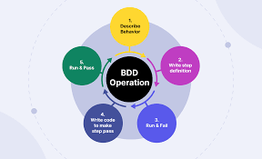

BDD keskendub süsteemi käitumise kirjeldamisele ärikeeles kasutades "Given-When-Then" formaati. Seda kasutatakse koostöö parandamiseks arendajate ja äripoolte vahel.
Arendustsükli joonis

Plussid ja miinused
Pluss: parem arusaam ärinõuetest
Miinus: keerukam alguses
Töövahend
Cucumber – BDD testide kirjutamiseks ja automaatseks käivitamiseks.